← До переліку лабораторних робіт
Лабораторна робота №11. Текстові та бінарні файли
Варіант 19. Виконав: Одарчук Олексій, КНУ імені Тараса Шевченка, ФІТ, група ІПЗ-11. C17, gcc / C++17, g++
1. Мета роботи
- Вивчити особливості використання текстових і бінарних файлів.
- Навчитися застосовувати текстові та бінарні файли в програмуванні.
- Опанувати послідовний і прямий доступ до компонентів файлу.
2. Умова задачі
Завдання 1 (19.1) - обробка текстових файлів
Створити текстовий файл, записавши в нього цілі числа, значення яких генерує генератор псевдовипадкових чисел у діапазоні, заданому користувачем з клавіатури. Знайти серед цих чисел такі, що є квадратами цілих чисел, і записати їх до нового текстового файлу.
Вимоги до виконання: процедурно-орієнтована технологія (код складається з функцій, основна програма викликає їх за командами меню); меню команд; створення файлу введенням з клавіатури; виведення вмісту файлу на екран; у кожній функції відкривати вхідні файли та закривати вихідні.
Завдання 2 (19.2) - обробка бінарних файлів
Створити масив структур із полями: назва фірми, продукт (комп'ютери і програмне забезпечення), регіон збуту, вартість продажу, термін постачання. Створений масив записати до бінарного файла. Виконати такі операції з бінарним файлом:
- доповнити бінарний файл новими записами;
- замінити вибраний користувачем запис на новий, значення полів якого ввести з клавіатури;
- видалити з бінарного файлу вибраний користувачем запис.
Здійснити пошук у бінарному файлі та вивести у вигляді таблиць: список комп'ютерів, що продаються у заданому регіоні конкретною фірмою; вартість проданого програмного забезпечення у задані терміни; найрентабельніші фірми.
Вимоги до виконання завдання 2: створений масив структур записати до бінарного файлу; надрукувати масив структур у вигляді таблиці, зчитавши дані з бінарного файлу; результати запитів записати до нового бінарного файлу і вивести на екран; розробити функції доповнення, видалення та заміни даних бінарного файлу. Усі дані для запитів беруться з файлу.
Обмеження умови: в процесі обробки рядків забороняється використовувати STL, методи
класу string, ітератори. Дозволено функції заголовних файлів
string.h, ctype.h, stdlib.h.
3. Аналіз задачі та теоретичне обґрунтування
Інструментарій
Методичні вказівки лишають вибір інструментарію за студентом: класи потоків
fstream, ifstream, ofstream або функції
stdio.h над покажчиком на FILE. У роботі застосовано обидва
підходи, по одному на завдання:
| Завдання | Інструментарій | Засоби |
|---|---|---|
| 1 - текстові файли | Мова C, стандартні функції stdio.h |
файл, визначений покажчиком на структуру FILE; fopen,
fclose, fprintf, fscanf
|
| 2 - бінарні файли | Мова C++, класи потоків fstream |
std::ifstream, std::ofstream, std::fstream;
методи read, write, seekp, tellg
|
Завдання 1 написано мовою C (task1.c, gcc -std=c17), завдання 2
- мовою C++ (task2.cpp, g++ -std=c++17).
Завдання 1. Перевірка, чи є число квадратом цілого
Перевірка виду sqrt(n) == (long)sqrt(n) ненадійна: для великих чисел
sqrt() може дати, наприклад, 9999,9999999 замість 10000, і повний квадрат не
буде визнано.
Тому після наближеного кореня перевіряються три сусідні цілі кандидати, а рівність
value·value == n порівнює цілі числа. Від'ємні числа відкидаються одразу; 0 =
0² вважається квадратом.
Завдання 1. Відкриття та закриття файлів
Кожна функція обробки (createFileRandom, createFileKeyboard,
printFile, extractSquares) сама відкриває потрібні файли й
закриває їх перед виходом, зокрема коли введення перервано.
Завдання 2. Сталий розмір запису
Текстові поля структури - масиви символів сталої довжини, тож позиція запису обчислюється
множенням номера на sizeof(Sale), без послідовного читання файлу. Сам файл
при цьому прив'язаний до платформи: розмір структури разом із вирівнюванням полів і
порядок байтів у числах залежать від компілятора та процесора, тому файл, записаний цією
програмою, коректно прочитає програма, зібрана тим самим компілятором для тієї самої
архітектури.
Так само кількість записів визначається без читання даних: файл відкривається з
позиціюванням у кінець (std::ios::ate), tellg() дає розмір у
байтах, який ділиться на розмір структури.
Завдання 2. Заміна, видалення та доповнення
Заміна - прямий доступ. seekp() встановлює позицію
(номер - 1) * sizeof(Sale), і перезаписується одна структура; решта файлу не
змінюється. Файл відкривається в режимі in | out, який не стирає вміст (режим
out
сам по собі усікав би файл).
file.seekp((number - 1) * sizeof(Sale), std::ios::beg); file.write(reinterpret_cast<const char *>(&sale), sizeof(Sale));
Видалення - перезапис. Вирізати байти із середини файлу неможливо, тому всі записи,
крім вибраного, записуються до файлу заново в режимі trunc. Кількість записів
у файлі обмежено 200: на цю межу розраховано масив, до якого зчитуються записи.
Доповнення виконується режимом std::ios::app: записи дописуються в
кінець, наявний вміст зберігається.
Завдання 2. Запити
Усі дані для запитів беруться з файлу, як вимагають методичні вказівки: кожна функція
запиту відкриває файл, послідовно зчитує записи в циклі
while (file.read(...)) і закриває його.
Завдання 2. Результати запитів
Результат кожного запиту записується до окремого бінарного файлу:
computers.dat і software.dat містять знайдені записи
Sale, firms.dat - записи FirmTotal (фірма,
кількість продажів, сумарна вартість). Файл відкривається в режимі trunc, тож
повторний запит замінює попередній результат.
На екран виводиться вміст щойно записаного файлу результатів.
Література: Ковалюк Т.В. Алгоритмізація та програмування. - Львів.: "Магнолія 2006", 2024. - 400 с.; Deitel P., Deitel H. C++ How to Program. Pearson Education, Inc. Hoboken, New Jersey. 2017. - 3015 p.
4. Блок-схема алгоритму
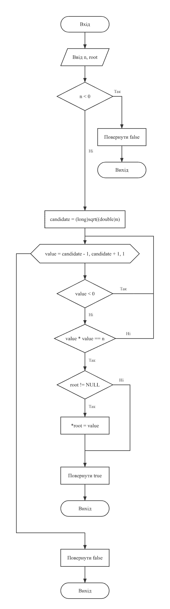
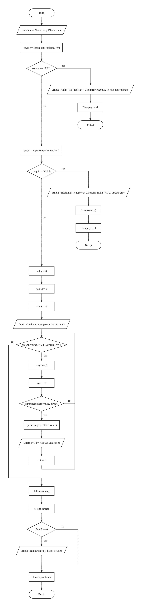
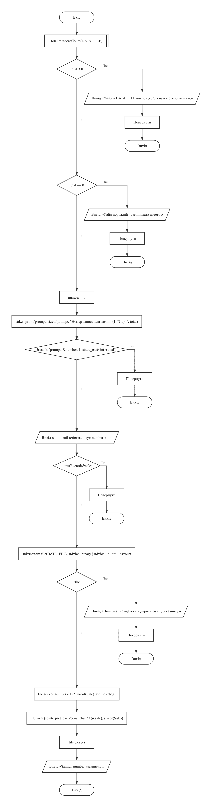
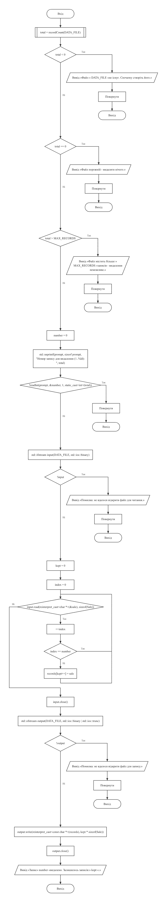
Схеми побудовано з текстів програм за допомогою rombik (rombik.app) відповідно до ДСТУ 19.701-90 (ISO 5807).
5. Текст програми
Завдання 1 - task1.c (текстові файли, stdio.h)
/*==============================================================================
Лабораторна робота №11. Завдання 1. Варіант 19.
Тема: обробка текстових файлів.
Умова (таблиця 11.2, завдання 19.1): створити текстовий файл, записавши
в нього цілі числа, значення яких генерує генератор псевдовипадкових чисел
у діапазоні, заданому користувачем з клавіатури. Знайти серед цих чисел
такі, що є квадратами цілих чисел, і записати їх до нового текстового файлу.
ВИМОГИ ДО ВИКОНАННЯ ЗАВДАННЯ 1:
- завдання реалізовано за процедурно-орієнтованою технологією: код
складається з функцій (введення даних, виведення результатів, розрахунок),
а основна програма викликає їх залежно від вибору команд меню;
- передбачено меню команд, які виконують окремі операції з обробки файлу;
- програма створює текстовий файл введенням даних з клавіатури
(додатково до генерації, якої вимагає варіант);
- програма виводить вміст файлу на екран;
- у кожній функції вхідні файли відкриваються, а вихідні закриваються.
Інструментарій: стандартні функції stdio.h над файлом, визначеним
покажчиком на структуру FILE (завдання 2 реалізовано класами потоків).
Виконав: Одарчук Олексій, КНУ імені Тараса Шевченка, ФІТ, група ІПЗ-11.
Компілятор: gcc -std=c17
==============================================================================*/
#include <stdio.h>
#include <stdbool.h>
#include <stdlib.h>
#include <time.h>
#include <math.h>
/* Імена файлів: вхідного (з усіма числами) та вихідного (з квадратами). */
const char *SOURCE_FILE = "numbers.txt";
const char *SQUARE_FILE = "squares.txt";
/* Найбільше за модулем значення числа у файлі. */
const int MAX_ABS_VALUE = 1000000;
/* Найбільша кількість чисел у файлі. */
const int MAX_COUNT = 10000;
/* Кількість чисел в одному рядку під час виведення файлу. */
const int NUMBERS_PER_LINE = 10;
/*------------------------------------------------------------------------------
skipLine - відкинути залишок рядка введення разом із символом '\n'.
------------------------------------------------------------------------------*/
void skipLine(void)
{
int c = getchar();
while (c != '\n' && c != EOF)
{
c = getchar();
}
}
/*------------------------------------------------------------------------------
readInt - прочитати ціле число із заданого діапазону з контролем введення.
Параметри: prompt [вхідний], value [вихідний], low, high [вхідні].
Повертає : true - число прочитано; false - вхідні дані вичерпано.
------------------------------------------------------------------------------*/
bool readInt(const char *prompt, int *value, int low, int high)
{
for (;;)
{
printf("%s", prompt);
const int scanned = scanf("%d", value);
if (scanned == EOF)
{
return false;
}
skipLine();
if (scanned == 1 && *value >= low && *value <= high)
{
return true;
}
printf("Помилка: потрібне ціле число від %d до %d.\n", low, high);
}
}
/*------------------------------------------------------------------------------
isPerfectSquare - чи є число квадратом цілого числа.
Від'ємні числа квадратами не є за означенням. Для невід'ємних обчислюється
цілий корінь, після чого перевіряється рівність його квадрата вихідному
числу. Порівнюються ЦІЛІ числа, а не дійсні: результат sqrt() для великих
значень може бути на одиницю молодшого розряду меншим за точний, тому
перевіряються три сусідні кандидати.
Параметри:
n [вхідний] - число, що перевіряється;
root [вихідний] - адреса змінної для кореня; заповнюється, якщо число
є квадратом; може бути NULL.
Повертає : true - число є квадратом цілого числа.
Локальні змінні:
candidate - наближене значення кореня;
value - кандидат на корінь, що перевіряється.
------------------------------------------------------------------------------*/
bool isPerfectSquare(long n, long *root)
{
if (n < 0)
{
return false;
}
const long candidate = (long)sqrt((double)n);
for (long value = candidate - 1; value <= candidate + 1; ++value)
{
if (value < 0)
{
continue;
}
if (value * value == n)
{
if (root != NULL)
{
*root = value;
}
return true;
}
}
return false;
}
/*------------------------------------------------------------------------------
createFileRandom - створити текстовий файл, заповнивши його
псевдовипадковими цілими числами із заданого діапазону.
Файл відкривається на запис у цій самій функції та закривається до виходу
з неї - відповідно до вимоги умови.
Параметри:
fileName [вхідний] - ім'я файлу;
count [вхідний] - кількість чисел;
low, high [вхідні] - межі діапазону значень.
Повертає : true - файл створено; false - файл не вдалося відкрити.
Локальні змінні:
file - покажчик на структуру FILE;
value - чергове згенероване число.
------------------------------------------------------------------------------*/
bool createFileRandom(const char *fileName, int count, int low, int high)
{
FILE *const file = fopen(fileName, "w");
if (file == NULL)
{
printf("Помилка: не вдалося створити файл \"%s\".\n", fileName);
return false;
}
const int range = high - low + 1;
/* Масштабування rand() на діапазон замість rand() % range: стандарт гарантує
лише RAND_MAX >= 32767, і для ширшого діапазону остача не охопила б
усіх значень. */
for (int i = 0; i < count; ++i)
{
const int value =
low + (int)((double)rand() / ((double)RAND_MAX + 1.0) * range);
fprintf(file, "%d\n", value);
}
fclose(file);
printf("Файл \"%s\" створено. Кількість чисел: %d, діапазон [%d; %d].\n", fileName,
count, low, high);
return true;
}
/*------------------------------------------------------------------------------
createFileKeyboard - створити текстовий файл, увівши числа з клавіатури.
Параметри:
fileName [вхідний] - ім'я файлу;
count [вхідний] - кількість чисел.
Повертає : true - файл створено; false - помилка або переривання введення.
------------------------------------------------------------------------------*/
bool createFileKeyboard(const char *fileName, int count)
{
FILE *const file = fopen(fileName, "w");
if (file == NULL)
{
printf("Помилка: не вдалося створити файл \"%s\".\n", fileName);
return false;
}
printf("Уведіть цілі числа (усього %d):\n", count);
for (int i = 0; i < count; ++i)
{
char prompt[40];
snprintf(prompt, sizeof prompt, " число %d: ", i + 1);
int value = 0;
if (!readInt(prompt, &value, -MAX_ABS_VALUE, MAX_ABS_VALUE))
{
fclose(file); /* закрити файл навіть при перериванні */
return false;
}
fprintf(file, "%d\n", value);
}
fclose(file);
printf("Файл \"%s\" створено. Кількість чисел: %d.\n", fileName, count);
return true;
}
/*------------------------------------------------------------------------------
printFile - вивести вміст текстового файлу на екран.
Числа виводяться по десять у рядку, щоб великий файл лишався читабельним.
Параметри: fileName [вхідний] - ім'я файлу.
Повертає : кількість прочитаних чисел або -1, якщо файл не існує.
Локальні змінні:
file - покажчик на структуру FILE;
value - прочитане число;
count - лічильник прочитаних чисел.
------------------------------------------------------------------------------*/
long printFile(const char *fileName)
{
FILE *const file = fopen(fileName, "r");
if (file == NULL)
{
printf("Файл \"%s\" не існує. Спочатку створіть його.\n", fileName);
return -1;
}
printf("Вміст файлу \"%s\":\n ", fileName);
long value = 0;
long count = 0;
while (fscanf(file, "%ld", &value) == 1)
{
printf(" %8ld", value);
++count;
if (count % NUMBERS_PER_LINE == 0)
{
printf("\n ");
}
}
if (count % NUMBERS_PER_LINE != 0)
{
printf("\n");
}
fclose(file);
printf("Усього чисел: %ld\n", count);
return count;
}
/*------------------------------------------------------------------------------
extractSquares - знайти у вхідному файлі числа, що є квадратами цілих чисел,
і записати їх до нового файлу.
Обидва файли відкриваються та закриваються в межах цієї функції: вхідний -
на читання, вихідний - на запис.
Параметри:
sourceName [вхідний] - ім'я вхідного файлу;
targetName [вхідний] - ім'я файлу для результату;
total [вихідний] - адреса лічильника переглянутих чисел.
Повертає : кількість знайдених квадратів або -1 у разі помилки.
Локальні змінні:
source, target - покажчики на структури FILE;
value - чергове прочитане число;
root - цілий корінь знайденого квадрата;
found - лічильник знайдених квадратів.
------------------------------------------------------------------------------*/
long extractSquares(const char *sourceName, const char *targetName, long *total)
{
FILE *const source = fopen(sourceName, "r");
if (source == NULL)
{
printf("Файл \"%s\" не існує. Спочатку створіть його.\n", sourceName);
return -1;
}
FILE *const target = fopen(targetName, "w");
if (target == NULL)
{
printf("Помилка: не вдалося створити файл \"%s\".\n", targetName);
fclose(source);
return -1;
}
long value = 0;
long found = 0;
*total = 0;
printf("Знайдені квадрати цілих чисел:\n");
while (fscanf(source, "%ld", &value) == 1)
{
++(*total);
long root = 0;
if (isPerfectSquare(value, &root))
{
fprintf(target, "%ld\n", value);
printf(" %ld = %ld^2\n", value, root);
++found;
}
}
fclose(source);
fclose(target);
if (found == 0)
{
printf(" таких чисел у файлі немає\n");
}
return found;
}
/*------------------------------------------------------------------------------
cmdCreate - команда меню: створити вхідний текстовий файл.
------------------------------------------------------------------------------*/
void cmdCreate(void)
{
char prompt[64];
int count = 0;
snprintf(prompt, sizeof prompt, "Уведіть кількість чисел (1..%d): ", MAX_COUNT);
if (!readInt(prompt, &count, 1, MAX_COUNT))
{
return;
}
printf("Спосіб створення файлу:\n"
" 1 - введення чисел з клавіатури\n"
" 2 - генерація псевдовипадкових чисел у заданому діапазоні\n");
int choice = 0;
if (!readInt("Оберіть спосіб (1..2): ", &choice, 1, 2))
{
return;
}
if (choice == 1)
{
createFileKeyboard(SOURCE_FILE, count);
return;
}
int low = 0;
int high = 0;
if (!readInt("Уведіть нижню межу діапазону: ", &low, -MAX_ABS_VALUE, MAX_ABS_VALUE))
{
return;
}
if (!readInt("Уведіть верхню межу діапазону: ", &high, low, MAX_ABS_VALUE))
{
return;
}
createFileRandom(SOURCE_FILE, count, low, high);
}
/*------------------------------------------------------------------------------
cmdExtract - команда меню: відібрати квадрати цілих чисел у новий файл.
------------------------------------------------------------------------------*/
void cmdExtract(void)
{
long total = 0;
const long found = extractSquares(SOURCE_FILE, SQUARE_FILE, &total);
if (found < 0)
{
return;
}
printf("\nПереглянуто чисел: %ld\n", total);
printf("Знайдено квадратів: %ld\n", found);
printf("Результат записано до файлу \"%s\".\n", SQUARE_FILE);
}
/*------------------------------------------------------------------------------
Головна функція. Відображає меню та викликає відповідні функції обробки файлів.
Локальні змінні:
choice - номер обраного пункту меню.
------------------------------------------------------------------------------*/
int main(void)
{
printf("Лабораторна робота №11, завдання 1 (варіант 19)\n");
printf("Виконав: студент групи ІПЗ-11 Одарчук Олексій\n");
printf("Обробка текстових файлів\n");
printf("Вхідний файл: %s, файл результату: %s\n", SOURCE_FILE, SQUARE_FILE);
/* Генератор псевдовипадкових чисел ініціалізується один раз на весь
сеанс роботи програми. */
srand((unsigned)time(NULL));
for (;;)
{
printf("\n============================================================\n");
printf("Меню команд:\n");
printf(" 1 - створити текстовий файл з цілими числами\n");
printf(" 2 - вивести вміст вхідного файлу\n");
printf(" 3 - відібрати квадрати цілих чисел у новий файл\n");
printf(" 4 - вивести вміст файлу з квадратами\n");
printf(" 5 - вихід\n");
int choice = 0;
if (!readInt("Оберіть команду (1..5): ", &choice, 1, 5))
{
printf("\nВхідні дані вичерпано. Завершення роботи.\n");
break;
}
printf("\n");
if (choice == 1)
{
cmdCreate();
}
else if (choice == 2)
{
printFile(SOURCE_FILE);
}
else if (choice == 3)
{
cmdExtract();
}
else if (choice == 4)
{
printFile(SQUARE_FILE);
}
else
{
printf("Завершення роботи.\n");
break;
}
}
return 0;
}
Завдання 2 - task2.cpp (бінарні файли, fstream)
/*==============================================================================
Лабораторна робота №11. Завдання 2. Варіант 19.
Тема: обробка бінарних файлів.
Умова (таблиця 11.2, завдання 19.2): створити масив структур. Кожна
структура складається з таких елементів: назва фірми, продукт, що
продається - комп'ютери і програмне забезпечення, регіон збуту, вартість
продажу, термін постачання. Створений масив структур записати до бінарного
файла. Виконати такі операції з бінарним файлом:
- доповнити бінарний файл новими записами;
- замінити вибраний користувачем запис у бінарному файлі на новий,
значення полів якого ввести з клавіатури;
- видалити з бінарного файлу вибраний користувачем запис.
Здійснити пошук у бінарному файлі та вивести у вигляді таблиць:
- список комп'ютерів, що продаються у заданому регіоні конкретною фірмою;
- вартість проданого програмного забезпечення у задані терміни;
- найрентабельніші фірми (з найбільшою вартістю продажів).
Результати запитів записати до нового бінарного файлу і вивести на екран.
Усі дані для запитів беруться з файлу: кожна функція запиту відкриває файл
даних, послідовно зчитує записи, записує знайдене до окремого файлу
результатів і закриває обидва файли; на екран виводиться вміст файлу
результатів.
Інструментарій: класи потоків fstream, ifstream, ofstream (завдання 1
реалізовано функціями stdio.h).
Заміна запису виконується прямим доступом: позиція запису обчислюється як
номер, помножений на розмір структури, і перезаписується лише цей запис.
Виконав: Одарчук Олексій, КНУ імені Тараса Шевченка, ФІТ, група ІПЗ-11.
Компілятор: g++ -std=c++17
==============================================================================*/
#include <iostream>
#include <fstream>
#include <iomanip>
#include <limits>
#include <cctype>
#include <cstdio>
#include <cstring>
#include <cstdlib>
#include <ctime>
/* Обмеження на розміри даних та імена бінарних файлів. */
const int MAX_RECORDS = 200; /* найбільша кількість записів у файлі даних */
const int MAX_NAME = 32;
const char *DATA_FILE = "sales.dat";
const char *COMPUTERS_FILE = "computers.dat"; /* результат запиту 1 */
const char *SOFTWARE_FILE = "software.dat"; /* результат запиту 2 */
const char *FIRMS_FILE = "firms.dat"; /* результат запиту 3 */
/* Межі року в терміні постачання. */
const int MIN_YEAR = 2000;
const int MAX_YEAR = 2100;
/* Ширини стовпців таблиці записів (у символах). */
const int COL_NUMBER = 4;
const int COL_FIRM = 14;
const int COL_PRODUCT = 16;
const int COL_KIND = 12;
const int COL_REGION = 16;
const int COL_PRICE = 13;
const int COL_DATE = 18;
const int TABLE_WIDTH =
COL_NUMBER + COL_FIRM + COL_PRODUCT + COL_KIND + COL_REGION + COL_PRICE + COL_DATE;
/* Ширини стовпців таблиці сум продажів по фірмах. */
const int COL_FIRM_NAME = 16;
const int COL_FIRM_SALES = 12;
const int COL_FIRM_TOTAL = 20;
const int FIRM_TABLE_WIDTH = COL_FIRM_NAME + COL_FIRM_SALES + COL_FIRM_TOTAL;
/* Вид продукту: умова прямо називає два види. */
enum class ProductKind
{
Computer,
Software
};
/* Термін постачання. */
struct Date
{
int day;
int month;
int year;
};
/*------------------------------------------------------------------------------
Sale - запис про продаж. Структура має сталий розмір (масиви символів
замість рядків змінної довжини), що є обов'язковою умовою для запису
в бінарний файл із прямим доступом: лише за сталого розміру запису
його позицію можна обчислити множенням номера на sizeof(Sale).
------------------------------------------------------------------------------*/
struct Sale
{
char firm[MAX_NAME];
ProductKind kind;
char product[MAX_NAME];
char region[MAX_NAME];
double price;
Date delivery;
};
/* Сумарні продажі однієї фірми - запис файлу результатів запиту 3. */
struct FirmTotal
{
char firm[MAX_NAME];
long sales;
double total;
};
/*==============================================================================
Допоміжні функції
==============================================================================*/
/*------------------------------------------------------------------------------
utf8Width - ширина рядка в символах, а не в байтах (кирилиця в UTF-8
займає два байти на літеру).
Параметри: s [вхідний] - рядок. Повертає: кількість символів.
------------------------------------------------------------------------------*/
int utf8Width(const char *s)
{
int width = 0;
for (const unsigned char *p = reinterpret_cast<const unsigned char *>(s);
*p != '\0'; ++p)
{
/* Продовжувальний байт UTF-8 має вигляд 10xxxxxx: маска 0xC0 лишає
два старші біти, і якщо вони не дорівнюють 10, це початок символу. */
if ((*p & 0xC0) != 0x80)
{
++width;
}
}
return width;
}
/*------------------------------------------------------------------------------
printPadded - вивести рядок, доповнивши пропусками до ширини в символах.
Параметри: s [вхідний], width [вхідний].
------------------------------------------------------------------------------*/
void printPadded(const char *s, int width)
{
std::cout << s;
for (int i = utf8Width(s); i < width; ++i)
{
std::cout << ' ';
}
}
/*------------------------------------------------------------------------------
kindName - назва виду продукту.
Параметри: kind [вхідний]. Повертає: рядок-константу.
------------------------------------------------------------------------------*/
const char *kindName(ProductKind kind)
{
return kind == ProductKind::Computer ? "комп'ютери" : "ПЗ";
}
/*------------------------------------------------------------------------------
dateToNumber - звести дату до числа виду РРРРММДД для порівняння.
Параметри: d [вхідний] - покажчик на дату. Повертає: число РРРРММДД.
------------------------------------------------------------------------------*/
long dateToNumber(const Date *d)
{
return static_cast<long>(d->year) * 10000 + d->month * 100 + d->day;
}
/*------------------------------------------------------------------------------
formatDate - записати дату до рядка у вигляді ДД.ММ.РРРР.
Параметри: d [вхідний] - покажчик на дату; buffer [вихідний], size [вхідний].
------------------------------------------------------------------------------*/
void formatDate(const Date *d, char *buffer, size_t size)
{
std::snprintf(buffer, size, "%02d.%02d.%d", d->day, d->month, d->year);
}
/*------------------------------------------------------------------------------
daysInMonth - кількість днів у місяці з урахуванням високосного року.
Параметри: month, year [вхідні]. Повертає: кількість днів.
------------------------------------------------------------------------------*/
int daysInMonth(int month, int year)
{
if (month == 2)
{
const bool isLeap = (year % 4 == 0 && year % 100 != 0) || year % 400 == 0;
return isLeap ? 29 : 28;
}
if (month == 4 || month == 6 || month == 9 || month == 11)
{
return 30;
}
return 31;
}
/*------------------------------------------------------------------------------
readInt - прочитати ціле число із заданого діапазону.
Параметри: prompt [вхідний], value [вихідний], low, high [вхідні].
Повертає : true - прочитано; false - вхідні дані вичерпано.
------------------------------------------------------------------------------*/
bool readInt(const char *prompt, int *value, int low, int high)
{
for (;;)
{
std::cout << prompt;
std::cin >> *value;
if (std::cin.fail() && std::cin.eof())
{
return false;
}
const bool isNumber = !std::cin.fail();
std::cin.clear();
std::cin.ignore(std::numeric_limits<std::streamsize>::max(), '\n');
if (isNumber && *value >= low && *value <= high)
{
return true;
}
std::cout << "Помилка: потрібне ціле число від " << low << " до " << high
<< ".\n";
}
}
/*------------------------------------------------------------------------------
readDouble - прочитати дійсне число, не менше за задану межу.
Параметри: prompt [вхідний], value [вихідний], low [вхідний].
Повертає : true - прочитано; false - вхідні дані вичерпано.
------------------------------------------------------------------------------*/
bool readDouble(const char *prompt, double *value, double low)
{
for (;;)
{
std::cout << prompt;
std::cin >> *value;
if (std::cin.fail() && std::cin.eof())
{
return false;
}
const bool isNumber = !std::cin.fail();
std::cin.clear();
std::cin.ignore(std::numeric_limits<std::streamsize>::max(), '\n');
if (isNumber && *value >= low)
{
return true;
}
std::cout << "Помилка: потрібне дійсне число, не менше за " << low << ".\n";
}
}
/*------------------------------------------------------------------------------
trimIncompleteUtf8 - відкинути неповний символ UTF-8 у кінці рядка.
Якщо рядок обрізано за розміром буфера, межа може пройти посередині
багатобайтового символу (кирилична літера займає два байти). Такий
залишок не є коректним символом, тому відкидається.
Параметри: s [вхідний/вихідний] - рядок.
Локальні змінні:
length - довжина рядка в байтах;
lead - індекс початкового байта останнього символу;
expected - кількість байтів, яку задає початковий байт.
------------------------------------------------------------------------------*/
void trimIncompleteUtf8(char *s)
{
const size_t length = std::strlen(s);
if (length == 0)
{
return;
}
/* Продовжувальні байти мають вигляд 10xxxxxx: пропускаємо їх до
початкового байта останнього символу. */
size_t lead = length - 1;
while (lead > 0 && (static_cast<unsigned char>(s[lead]) & 0xC0) == 0x80)
{
--lead;
}
/* Старші біти початкового байта задають довжину послідовності:
110xxxxx - 2 байти, 1110xxxx - 3, 11110xxx - 4. */
const unsigned char first = static_cast<unsigned char>(s[lead]);
size_t expected = 1;
if ((first & 0xE0) == 0xC0)
{
expected = 2;
}
else if ((first & 0xF0) == 0xE0)
{
expected = 3;
}
else if ((first & 0xF8) == 0xF0)
{
expected = 4;
}
if (length - lead < expected)
{
s[lead] = '\0';
}
}
/*------------------------------------------------------------------------------
trimSpaces - прибрати пропуски на початку й у кінці рядка, щоб випадковий
пропуск не заважав порівнянню назв під час пошуку.
Параметри: s [вхідний/вихідний] - рядок.
------------------------------------------------------------------------------*/
void trimSpaces(char *s)
{
size_t length = std::strlen(s);
while (length > 0 && std::isspace(static_cast<unsigned char>(s[length - 1])))
{
--length;
}
s[length] = '\0';
size_t start = 0;
while (std::isspace(static_cast<unsigned char>(s[start])))
{
++start;
}
std::memmove(s, s + start, length - start + 1);
}
/*------------------------------------------------------------------------------
readLine - прочитати текстовий рядок з клавіатури.
Пропуски на початку й у кінці рядка відкидаються.
Параметри: prompt [вхідний], buffer [вихідний], size [вхідний].
Повертає : true - прочитано; false - вхідні дані вичерпано.
------------------------------------------------------------------------------*/
bool readLine(const char *prompt, char *buffer, int size)
{
std::cout << prompt;
std::cin.getline(buffer, size);
if (std::cin.eof() && std::cin.gcount() == 0)
{
return false;
}
if (std::cin.fail() && !std::cin.eof())
{
/* Рядок довший за буфер: зайві символи відкидаються. */
std::cin.clear();
std::cin.ignore(std::numeric_limits<std::streamsize>::max(), '\n');
trimIncompleteUtf8(buffer);
std::cout << "Увага: рядок задовгий, збережено лише його початок: " << buffer
<< '\n';
}
trimSpaces(buffer);
return true;
}
/*------------------------------------------------------------------------------
readDate - прочитати дату: рік, місяць і день.
Найбільший припустимий день залежить від місяця й року, тому
неіснуючу дату (наприклад, 31.02) ввести неможливо.
Параметри:
indent [вхідний] - відступ перед запрошеннями;
date [вихідний] - покажчик на дату.
Повертає : true - прочитано; false - вхідні дані вичерпано.
------------------------------------------------------------------------------*/
bool readDate(const char *indent, Date *date)
{
char prompt[64];
std::snprintf(prompt, sizeof prompt, "%sрік (%d..%d): ", indent, MIN_YEAR,
MAX_YEAR);
if (!readInt(prompt, &date->year, MIN_YEAR, MAX_YEAR))
{
return false;
}
std::snprintf(prompt, sizeof prompt, "%sмісяць (1..12): ", indent);
if (!readInt(prompt, &date->month, 1, 12))
{
return false;
}
const int lastDay = daysInMonth(date->month, date->year);
std::snprintf(prompt, sizeof prompt, "%sдень (1..%d): ", indent, lastDay);
return readInt(prompt, &date->day, 1, lastDay);
}
/*==============================================================================
Робота з бінарним файлом
==============================================================================*/
/*------------------------------------------------------------------------------
recordCount - кількість записів у бінарному файлі.
Обчислюється як розмір файлу, поділений на розмір однієї структури.
Такий спосіб можливий саме тому, що всі записи мають однаковий розмір.
Параметри: fileName [вхідний] - ім'я файлу.
Повертає : кількість записів або -1, якщо файл не існує.
Локальні змінні:
file - вхідний файловий потік;
size - розмір файлу в байтах.
------------------------------------------------------------------------------*/
long recordCount(const char *fileName)
{
std::ifstream file(fileName, std::ios::binary | std::ios::ate);
if (!file)
{
return -1;
}
const std::streampos size = file.tellg();
file.close();
return static_cast<long>(size / static_cast<std::streamoff>(sizeof(Sale)));
}
/*------------------------------------------------------------------------------
printTableHeader - вивести заголовок таблиці записів.
Заголовок відповідає переліку полів з умови варіанта і виводиться
один раз перед даними.
------------------------------------------------------------------------------*/
void printTableHeader()
{
std::cout << " ";
printPadded("№", COL_NUMBER);
printPadded("Фірма", COL_FIRM);
printPadded("Продукт", COL_PRODUCT);
printPadded("Вид", COL_KIND);
printPadded("Регіон збуту", COL_REGION);
printPadded("Вартість", COL_PRICE);
printPadded("Термін постачання", COL_DATE);
std::cout << "\n ";
for (int i = 0; i < TABLE_WIDTH; ++i)
{
std::cout << '-';
}
std::cout << '\n';
}
/*------------------------------------------------------------------------------
printRecord - вивести один запис рядком таблиці.
Параметри: sale [вхідний] - покажчик на структуру; index [вхідний] - номер рядка.
------------------------------------------------------------------------------*/
void printRecord(const Sale *sale, long index)
{
char buffer[MAX_NAME];
std::cout << " ";
std::snprintf(buffer, sizeof buffer, "%ld.", index);
printPadded(buffer, COL_NUMBER);
printPadded(sale->firm, COL_FIRM);
printPadded(sale->product, COL_PRODUCT);
printPadded(kindName(sale->kind), COL_KIND);
printPadded(sale->region, COL_REGION);
std::snprintf(buffer, sizeof buffer, "%.2f", sale->price);
printPadded(buffer, COL_PRICE);
formatDate(&sale->delivery, buffer, sizeof buffer);
printPadded(buffer, COL_DATE);
std::cout << '\n';
}
/*------------------------------------------------------------------------------
printSalesFile - вивести записи бінарного файлу у вигляді таблиці.
Записи зчитуються послідовно, доки не буде досягнуто кінця файлу.
Заголовок таблиці виводиться один раз перед першим записом.
Параметри:
fileName [вхідний] - ім'я файлу;
total [вихідний] - сумарна вартість виведених записів.
Повертає : кількість записів або -1, якщо файл не існує.
------------------------------------------------------------------------------*/
long printSalesFile(const char *fileName, double *total)
{
std::ifstream file(fileName, std::ios::binary);
if (!file)
{
return -1;
}
Sale sale;
long count = 0;
*total = 0.0;
while (file.read(reinterpret_cast<char *>(&sale), sizeof(Sale)))
{
if (count == 0)
{
printTableHeader();
}
printRecord(&sale, ++count);
*total += sale.price;
}
file.close();
return count;
}
/*------------------------------------------------------------------------------
printFirmHeader - вивести заголовок таблиці сум продажів по фірмах.
------------------------------------------------------------------------------*/
void printFirmHeader()
{
std::cout << " ";
printPadded("Фірма", COL_FIRM_NAME);
printPadded("Продажів", COL_FIRM_SALES);
printPadded("Сумарна вартість", COL_FIRM_TOTAL);
std::cout << "\n ";
for (int i = 0; i < FIRM_TABLE_WIDTH; ++i)
{
std::cout << '-';
}
std::cout << '\n';
}
/*------------------------------------------------------------------------------
printFirmRow - вивести рядок таблиці сум продажів по фірмах.
Параметри: firm [вхідний] - покажчик на структуру з сумами фірми.
------------------------------------------------------------------------------*/
void printFirmRow(const FirmTotal *firm)
{
char buffer[MAX_NAME];
std::cout << " ";
printPadded(firm->firm, COL_FIRM_NAME);
std::snprintf(buffer, sizeof buffer, "%ld", firm->sales);
printPadded(buffer, COL_FIRM_SALES);
std::snprintf(buffer, sizeof buffer, "%.2f", firm->total);
printPadded(buffer, COL_FIRM_TOTAL);
std::cout << '\n';
}
/* Набори назв для генерації псевдовипадкових записів. */
const char *FIRMS[] = {"Everest", "Kvazar", "Sokil", "Dnipro-IT", "Karpaty"};
const char *REGIONS[] = {"Київський", "Львівський", "Одеський", "Харківський",
"Дніпровський"};
const char *COMPUTERS[] = {"Optima 5", "Nova Pro", "Titan X", "Bureau 300"};
const char *SOFTWARE[] = {"OblikPro", "SklavSoft", "DocFlow", "AntiVirus U"};
const int FIRMS_COUNT = sizeof FIRMS / sizeof FIRMS[0];
const int REGIONS_COUNT = sizeof REGIONS / sizeof REGIONS[0];
const int COMPUTERS_COUNT = sizeof COMPUTERS / sizeof COMPUTERS[0];
const int SOFTWARE_COUNT = sizeof SOFTWARE / sizeof SOFTWARE[0];
/*------------------------------------------------------------------------------
generateRecord - заповнити запис псевдовипадковими даними.
Параметри: sale [вихідний] - покажчик на структуру.
------------------------------------------------------------------------------*/
void generateRecord(Sale *sale)
{
std::strcpy(sale->firm, FIRMS[std::rand() % FIRMS_COUNT]);
std::strcpy(sale->region, REGIONS[std::rand() % REGIONS_COUNT]);
sale->kind = (std::rand() % 2 == 0) ? ProductKind::Computer : ProductKind::Software;
if (sale->kind == ProductKind::Computer)
{
std::strcpy(sale->product, COMPUTERS[std::rand() % COMPUTERS_COUNT]);
}
else
{
std::strcpy(sale->product, SOFTWARE[std::rand() % SOFTWARE_COUNT]);
}
/* Вартість від 1000,00 до 9999,99 з копійками. */
sale->price = 1000.0 + (std::rand() % 9000) + (std::rand() % 100) / 100.0;
sale->delivery.year = 2025;
sale->delivery.month = 1 + std::rand() % 12;
sale->delivery.day = 1 + std::rand() % daysInMonth(sale->delivery.month, 2025);
}
/*------------------------------------------------------------------------------
inputRecord - заповнити запис даними з клавіатури.
Параметри: sale [вихідний] - покажчик на структуру.
Повертає : true - заповнено; false - вхідні дані вичерпано.
------------------------------------------------------------------------------*/
bool inputRecord(Sale *sale)
{
if (!readLine(" Назва фірми: ", sale->firm, MAX_NAME))
{
return false;
}
int kind = 0;
if (!readInt(" Вид продукту (1 - комп'ютери, 2 - ПЗ): ", &kind, 1, 2))
{
return false;
}
sale->kind = (kind == 1) ? ProductKind::Computer : ProductKind::Software;
if (!readLine(" Назва продукту: ", sale->product, MAX_NAME))
{
return false;
}
if (!readLine(" Регіон збуту: ", sale->region, MAX_NAME))
{
return false;
}
if (!readDouble(" Вартість продажу: ", &sale->price, 0.0))
{
return false;
}
std::cout << " Термін постачання:\n";
return readDate(" ", &sale->delivery);
}
/*------------------------------------------------------------------------------
cmdCreateFile - команда меню: створити масив структур і записати його
до бінарного файлу.
Файл відкривається у режимі std::ios::trunc, тобто попередній вміст
знищується - команда створює файл заново.
------------------------------------------------------------------------------*/
void cmdCreateFile()
{
char prompt[64];
int n = 0;
std::snprintf(prompt, sizeof prompt,
"Уведіть кількість записів (1..%d): ", MAX_RECORDS);
if (!readInt(prompt, &n, 1, MAX_RECORDS))
{
return;
}
std::cout << "Спосіб створення:\n"
" 1 - введення з клавіатури\n"
" 2 - генерація псевдовипадкових даних\n";
int choice = 0;
if (!readInt("Оберіть спосіб (1..2): ", &choice, 1, 2))
{
return;
}
Sale records[MAX_RECORDS];
if (choice == 1)
{
for (int i = 0; i < n; ++i)
{
std::cout << "\n --- запис " << (i + 1) << " ---\n";
if (!inputRecord(&records[i]))
{
return;
}
}
}
else
{
for (int i = 0; i < n; ++i)
{
generateRecord(&records[i]);
}
}
std::ofstream file(DATA_FILE, std::ios::binary | std::ios::trunc);
if (!file)
{
std::cout << "Помилка: не вдалося створити файл " << DATA_FILE << ".\n";
return;
}
file.write(reinterpret_cast<const char *>(records), n * sizeof(Sale));
file.close();
std::cout << "\nМасив структур записано до бінарного файлу " << DATA_FILE
<< ". Кількість записів: " << n << ".\n";
}
/*------------------------------------------------------------------------------
cmdPrintFile - команда меню: вивести вміст бінарного файлу.
Записи зчитуються послідовно, доки не буде досягнуто кінця файлу.
------------------------------------------------------------------------------*/
void cmdPrintFile()
{
if (recordCount(DATA_FILE) < 0)
{
std::cout << "Файл " << DATA_FILE << " не існує. Спочатку створіть його.\n";
return;
}
std::cout << "\nВміст бінарного файлу " << DATA_FILE << "\n\n";
double total = 0.0;
const long count = printSalesFile(DATA_FILE, &total);
std::cout << "\n Записів у файлі: " << count << '\n';
}
/*------------------------------------------------------------------------------
cmdAppend - команда меню: доповнити бінарний файл новими записами.
Файл відкривається в режимі std::ios::app - записи дописуються в кінець,
наявний вміст зберігається.
------------------------------------------------------------------------------*/
void cmdAppend()
{
const long total = recordCount(DATA_FILE);
if (total < 0)
{
std::cout << "Файл " << DATA_FILE << " не існує. Спочатку створіть його.\n";
return;
}
if (total >= MAX_RECORDS)
{
std::cout << "У файлі вже найбільша допустима кількість записів ("
<< MAX_RECORDS << ").\n";
return;
}
/* Кількість записів у файлі не може перевищити MAX_RECORDS: на цю межу
розраховано масиви у функціях видалення та запиту 3. */
const int freeSlots = MAX_RECORDS - static_cast<int>(total);
int n = 0;
char prompt[80];
std::snprintf(prompt, sizeof prompt,
"Скільки записів дописати (1..%d): ", freeSlots);
if (!readInt(prompt, &n, 1, freeSlots))
{
return;
}
std::ofstream file(DATA_FILE, std::ios::binary | std::ios::app);
if (!file)
{
std::cout << "Помилка: не вдалося відкрити файл для дописування.\n";
return;
}
for (int i = 0; i < n; ++i)
{
std::cout << "\n --- новий запис " << (i + 1) << " ---\n";
Sale sale;
if (!inputRecord(&sale))
{
file.close();
return;
}
file.write(reinterpret_cast<const char *>(&sale), sizeof(Sale));
}
file.close();
std::cout << "\nДописано записів: " << n
<< ". Усього у файлі: " << recordCount(DATA_FILE) << ".\n";
}
/*------------------------------------------------------------------------------
cmdReplace - команда меню: замінити вибраний користувачем запис.
ПРЯМИЙ ДОСТУП до компонентів бінарного файлу. Позиція запису обчислюється
як (номер - 1) * sizeof(Sale); покажчик запису встановлюється методом
seekp(), після чого перезаписується рівно одна структура. Решта файлу
не переписується - саме в цьому перевага бінарного файлу зі сталим
розміром запису перед текстовим.
------------------------------------------------------------------------------*/
void cmdReplace()
{
const long total = recordCount(DATA_FILE);
if (total < 0)
{
std::cout << "Файл " << DATA_FILE << " не існує. Спочатку створіть його.\n";
return;
}
if (total == 0)
{
std::cout << "Файл порожній - замінювати нічого.\n";
return;
}
int number = 0;
char prompt[80];
std::snprintf(prompt, sizeof prompt, "Номер запису для заміни (1..%ld): ", total);
if (!readInt(prompt, &number, 1, static_cast<int>(total)))
{
return;
}
std::cout << "\n --- новий вміст запису " << number << " ---\n";
Sale sale;
if (!inputRecord(&sale))
{
return;
}
/* Режим in|out відкриває наявний файл без знищення вмісту. */
std::fstream file(DATA_FILE, std::ios::binary | std::ios::in | std::ios::out);
if (!file)
{
std::cout << "Помилка: не вдалося відкрити файл для запису.\n";
return;
}
file.seekp((number - 1) * sizeof(Sale), std::ios::beg);
file.write(reinterpret_cast<const char *>(&sale), sizeof(Sale));
file.close();
std::cout << "\nЗапис " << number << " замінено.\n";
}
/*------------------------------------------------------------------------------
cmdDelete - команда меню: видалити вибраний користувачем запис.
Бінарний файл не має операції вилучення частини вмісту, тому видалення
виконується перезаписом: усі записи, крім вибраного, послідовно
переписуються до файлу заново. Це принципова відмінність від заміни,
яка обходиться прямим доступом.
------------------------------------------------------------------------------*/
void cmdDelete()
{
const long total = recordCount(DATA_FILE);
if (total < 0)
{
std::cout << "Файл " << DATA_FILE << " не існує. Спочатку створіть його.\n";
return;
}
if (total == 0)
{
std::cout << "Файл порожній - видаляти нічого.\n";
return;
}
if (total > MAX_RECORDS)
{
std::cout << "Файл містить більше " << MAX_RECORDS
<< " записів - видалення неможливе.\n";
return;
}
int number = 0;
char prompt[80];
std::snprintf(prompt, sizeof prompt,
"Номер запису для видалення (1..%ld): ", total);
if (!readInt(prompt, &number, 1, static_cast<int>(total)))
{
return;
}
/* Крок 1: зчитати всі записи, крім вибраного. */
std::ifstream input(DATA_FILE, std::ios::binary);
if (!input)
{
std::cout << "Помилка: не вдалося відкрити файл для читання.\n";
return;
}
Sale records[MAX_RECORDS];
long kept = 0;
long index = 0;
Sale sale;
while (input.read(reinterpret_cast<char *>(&sale), sizeof(Sale)))
{
++index;
if (index == number)
{
continue; /* вибраний запис пропускається */
}
records[kept++] = sale;
}
input.close();
/* Крок 2: перезаписати файл без вилученого запису. */
std::ofstream output(DATA_FILE, std::ios::binary | std::ios::trunc);
if (!output)
{
std::cout << "Помилка: не вдалося відкрити файл для запису.\n";
return;
}
output.write(reinterpret_cast<const char *>(records), kept * sizeof(Sale));
output.close();
std::cout << "\nЗапис " << number << " видалено. Залишилось записів: " << kept
<< ".\n";
}
/*==============================================================================
Запити. Усі дані беруться з файлу, результат записується до нового
бінарного файлу і виводиться на екран з цього файлу.
==============================================================================*/
/*------------------------------------------------------------------------------
cmdQueryComputers - запит 1: список комп'ютерів, що продаються у заданому
регіоні конкретною фірмою.
Знайдені записи записуються до файлу COMPUTERS_FILE, після чого вміст
цього файлу виводиться на екран.
Локальні змінні:
input, output - файл даних і файл результатів;
region, firm - ключі пошуку;
found, total - кількість і сумарна вартість знайдених записів.
------------------------------------------------------------------------------*/
void cmdQueryComputers()
{
char region[MAX_NAME];
char firm[MAX_NAME];
if (!readLine("Уведіть регіон збуту: ", region, MAX_NAME))
{
return;
}
if (!readLine("Уведіть назву фірми: ", firm, MAX_NAME))
{
return;
}
std::ifstream input(DATA_FILE, std::ios::binary);
if (!input)
{
std::cout << "Файл " << DATA_FILE << " не існує. Спочатку створіть його.\n";
return;
}
std::ofstream output(COMPUTERS_FILE, std::ios::binary | std::ios::trunc);
if (!output)
{
std::cout << "Помилка: не вдалося створити файл " << COMPUTERS_FILE << ".\n";
return;
}
Sale sale;
while (input.read(reinterpret_cast<char *>(&sale), sizeof(Sale)))
{
if (sale.kind == ProductKind::Computer &&
std::strcmp(sale.region, region) == 0 && std::strcmp(sale.firm, firm) == 0)
{
output.write(reinterpret_cast<const char *>(&sale), sizeof(Sale));
}
}
input.close();
output.close();
std::cout << "\nЗапит 1. Комп'ютери, що продаються у регіоні \"" << region
<< "\" фірмою \"" << firm << "\"\n"
<< "Результат записано до бінарного файлу " << COMPUTERS_FILE << "\n\n";
double total = 0.0;
const long found = printSalesFile(COMPUTERS_FILE, &total);
if (found <= 0)
{
std::cout << " За заданими ключами пошуку записів не знайдено.\n";
}
else
{
std::cout << "\n Знайдено записів: " << found
<< ", сумарна вартість: " << std::fixed << std::setprecision(2)
<< total << '\n';
}
}
/*------------------------------------------------------------------------------
cmdQuerySoftware - запит 2: вартість проданого програмного забезпечення
у задані терміни.
Знайдені записи записуються до файлу SOFTWARE_FILE, після чого вміст
цього файлу виводиться на екран.
------------------------------------------------------------------------------*/
void cmdQuerySoftware()
{
Date from;
Date to;
std::cout << "Початок періоду постачання:\n";
if (!readDate(" ", &from))
{
return;
}
std::cout << "Кінець періоду постачання:\n";
if (!readDate(" ", &to))
{
return;
}
const long fromNumber = dateToNumber(&from);
const long toNumber = dateToNumber(&to);
if (fromNumber > toNumber)
{
std::cout << "\nПочаток періоду пізніший за його кінець - "
"період порожній.\n";
return;
}
std::ifstream input(DATA_FILE, std::ios::binary);
if (!input)
{
std::cout << "Файл " << DATA_FILE << " не існує. Спочатку створіть його.\n";
return;
}
std::ofstream output(SOFTWARE_FILE, std::ios::binary | std::ios::trunc);
if (!output)
{
std::cout << "Помилка: не вдалося створити файл " << SOFTWARE_FILE << ".\n";
return;
}
Sale sale;
while (input.read(reinterpret_cast<char *>(&sale), sizeof(Sale)))
{
const long deliveryNumber = dateToNumber(&sale.delivery);
if (sale.kind == ProductKind::Software && deliveryNumber >= fromNumber &&
deliveryNumber <= toNumber)
{
output.write(reinterpret_cast<const char *>(&sale), sizeof(Sale));
}
}
input.close();
output.close();
char fromText[16];
char toText[16];
formatDate(&from, fromText, sizeof fromText);
formatDate(&to, toText, sizeof toText);
std::cout << "\nЗапит 2. Програмне забезпечення з терміном постачання з "
<< fromText << " до " << toText << "\n"
<< "Результат записано до бінарного файлу " << SOFTWARE_FILE << "\n\n";
double total = 0.0;
const long found = printSalesFile(SOFTWARE_FILE, &total);
if (found <= 0)
{
std::cout << " У заданий період програмне забезпечення "
"не постачалося.\n";
}
else
{
std::cout << "\n Знайдено записів: " << found
<< "\n Вартість проданого програмного забезпечення: " << std::fixed
<< std::setprecision(2) << total << '\n';
}
}
/*------------------------------------------------------------------------------
cmdQueryFirms - запит 3: найрентабельніші фірми (з найбільшою вартістю
продажів).
Записи зчитуються з файлу й групуються за назвою фірми. ВСІ фірми
з максимальною сумою (найбільших значень може бути кілька) записуються
до файлу FIRMS_FILE, після чого вміст цього файлу виводиться на екран.
Локальні змінні:
firms - сумарні продажі кожної фірми;
firmCount - кількість різних фірм;
maxTotal - найбільша сумарна вартість.
------------------------------------------------------------------------------*/
void cmdQueryFirms()
{
std::ifstream input(DATA_FILE, std::ios::binary);
if (!input)
{
std::cout << "Файл " << DATA_FILE << " не існує. Спочатку створіть його.\n";
return;
}
FirmTotal firms[MAX_RECORDS];
int firmCount = 0;
Sale sale;
while (input.read(reinterpret_cast<char *>(&sale), sizeof(Sale)))
{
int position = -1;
for (int j = 0; j < firmCount; ++j)
{
if (std::strcmp(firms[j].firm, sale.firm) == 0)
{
position = j;
break;
}
}
if (position < 0)
{
if (firmCount == MAX_RECORDS)
{
break; /* файл містить більше записів, ніж допускає програма */
}
position = firmCount++;
std::strcpy(firms[position].firm, sale.firm);
firms[position].sales = 0;
firms[position].total = 0.0;
}
firms[position].total += sale.price;
++firms[position].sales;
}
input.close();
if (firmCount == 0)
{
std::cout << "Файл порожній - даних для запиту немає.\n";
return;
}
double maxTotal = firms[0].total;
for (int j = 1; j < firmCount; ++j)
{
if (firms[j].total > maxTotal)
{
maxTotal = firms[j].total;
}
}
std::cout << "\nЗапит 3. Сумарна вартість продажів по фірмах\n\n";
printFirmHeader();
for (int j = 0; j < firmCount; ++j)
{
printFirmRow(&firms[j]);
}
std::ofstream output(FIRMS_FILE, std::ios::binary | std::ios::trunc);
if (!output)
{
std::cout << "Помилка: не вдалося створити файл " << FIRMS_FILE << ".\n";
return;
}
for (int j = 0; j < firmCount; ++j)
{
if (firms[j].total == maxTotal)
{
output.write(reinterpret_cast<const char *>(&firms[j]), sizeof(FirmTotal));
}
}
output.close();
/* Виведення результату з файлу, до якого його щойно записано. */
std::ifstream result(FIRMS_FILE, std::ios::binary);
if (!result)
{
std::cout << "Помилка: не вдалося відкрити файл " << FIRMS_FILE << ".\n";
return;
}
std::cout << "\nНайрентабельніші фірми (з найбільшою вартістю продажів)\n"
<< "Результат записано до бінарного файлу " << FIRMS_FILE << "\n\n";
printFirmHeader();
FirmTotal firm;
while (result.read(reinterpret_cast<char *>(&firm), sizeof(FirmTotal)))
{
printFirmRow(&firm);
}
result.close();
}
/*------------------------------------------------------------------------------
Головна функція. Відображає меню та викликає відповідні функції.
Локальні змінні: choice - номер обраного пункту меню.
------------------------------------------------------------------------------*/
int main()
{
std::cout << "Лабораторна робота №11, завдання 2 (варіант 19)\n"
"Виконав: студент групи ІПЗ-11 Одарчук Олексій\n"
"Обробка бінарних файлів\n"
"Файл даних: "
<< DATA_FILE << "\n";
/* Генератор псевдовипадкових чисел ініціалізується один раз на весь
сеанс роботи програми. */
std::srand(static_cast<unsigned>(std::time(nullptr)));
for (;;)
{
std::cout << "\n============================================================\n"
"Меню команд:\n"
" 1 - створити масив структур і записати до бінарного файлу\n"
" 2 - вивести вміст бінарного файлу\n"
" 3 - доповнити файл новими записами\n"
" 4 - замінити вибраний запис (прямий доступ)\n"
" 5 - видалити вибраний запис\n"
" 6 - запит: комп'ютери у заданому регіоні заданої фірми\n"
" 7 - запит: вартість проданого ПЗ у задані терміни\n"
" 8 - запит: найрентабельніші фірми\n"
" 9 - вихід\n";
int choice = 0;
if (!readInt("Оберіть команду (1..9): ", &choice, 1, 9))
{
std::cout << "\nВхідні дані вичерпано. Завершення роботи.\n";
break;
}
std::cout << '\n';
if (choice == 1)
{
cmdCreateFile();
}
else if (choice == 2)
{
cmdPrintFile();
}
else if (choice == 3)
{
cmdAppend();
}
else if (choice == 4)
{
cmdReplace();
}
else if (choice == 5)
{
cmdDelete();
}
else if (choice == 6)
{
cmdQueryComputers();
}
else if (choice == 7)
{
cmdQuerySoftware();
}
else if (choice == 8)
{
cmdQueryFirms();
}
else
{
std::cout << "Завершення роботи.\n";
break;
}
}
return 0;
}
6. Результати виконання роботи
Компіляція: make (gcc -std=c17 та g++ -std=c++17,
прапорці -Wall -Wextra -pedantic -O2). Попереджень компілятора немає.
Нижче наведено екранні копії повних прогонів програм: кожна починається з запуску програми, містить усе введення з клавіатури й увесь вивід до завершення роботи. Прогін, що не вміщується на один екран, подано кількома послідовними частинами. Протоколи всіх прогонів, зокрема додаткових наборів вхідних даних, винесено окремими файлами за посиланнями.
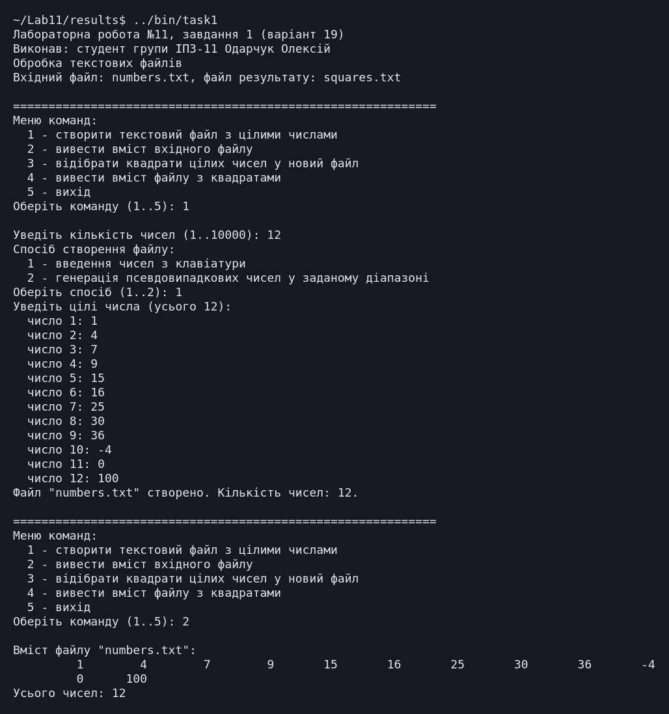
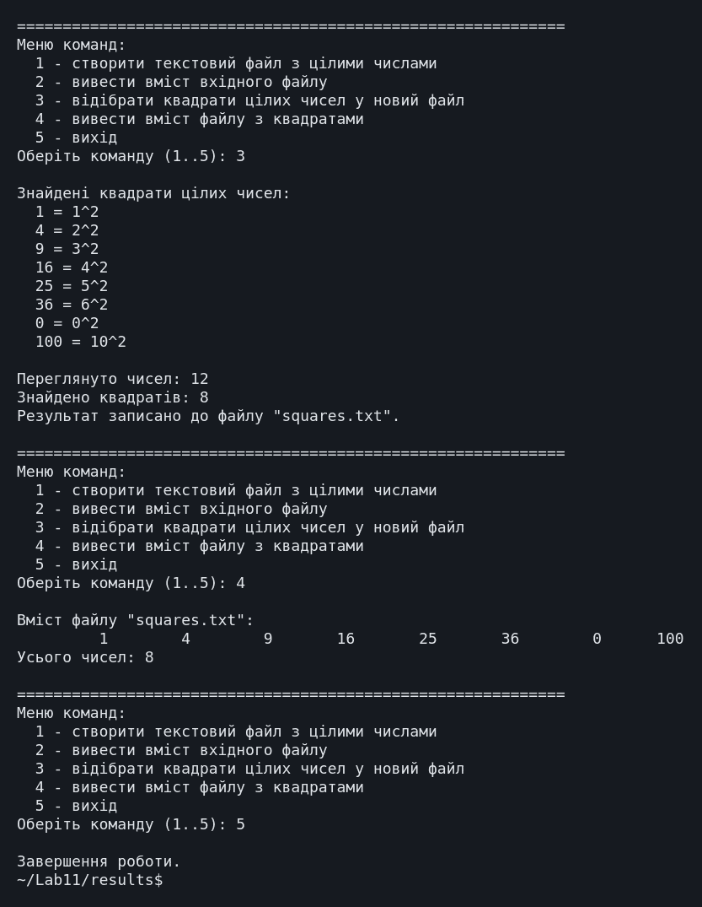
Повний протокол виконання (task1.txt) (повний протокол, 226 рядків)
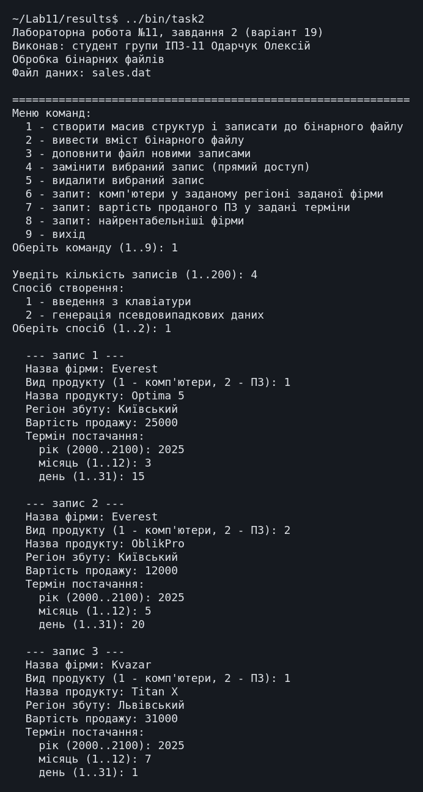
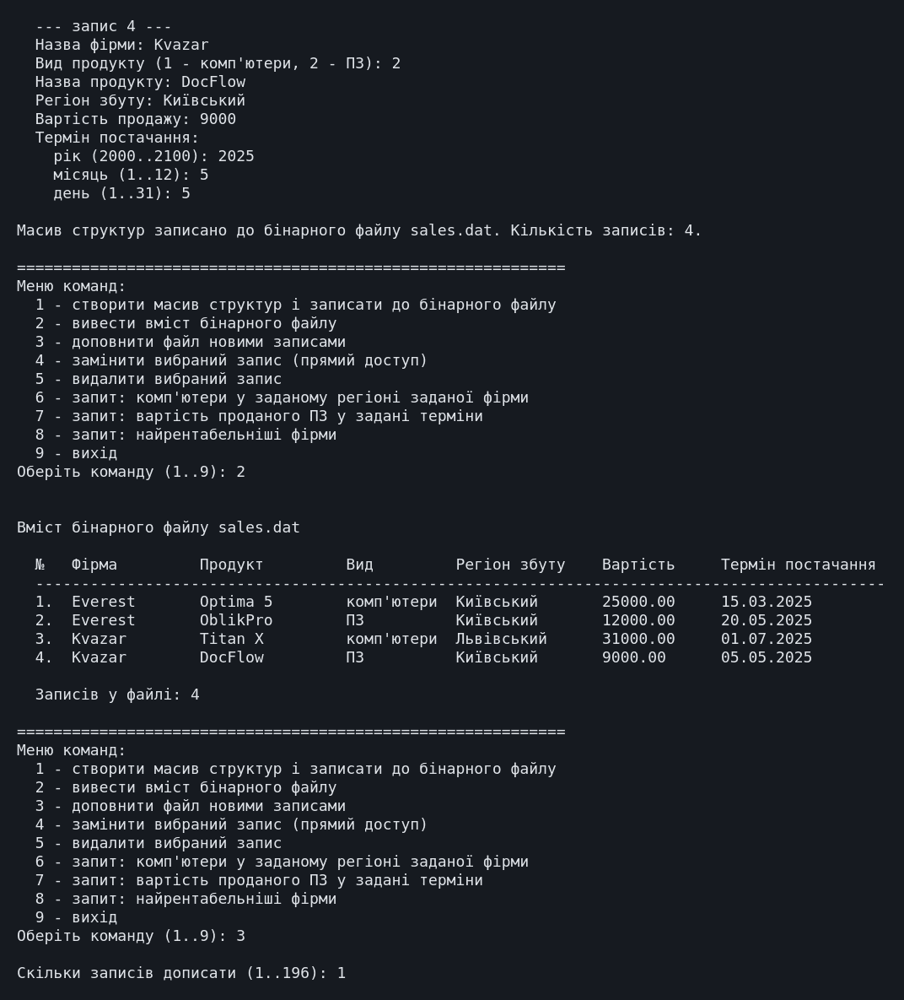
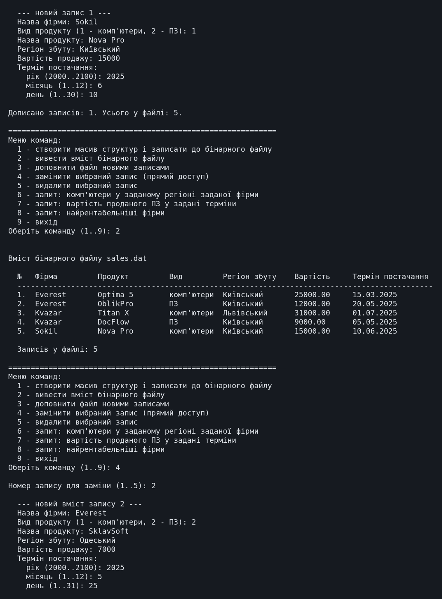
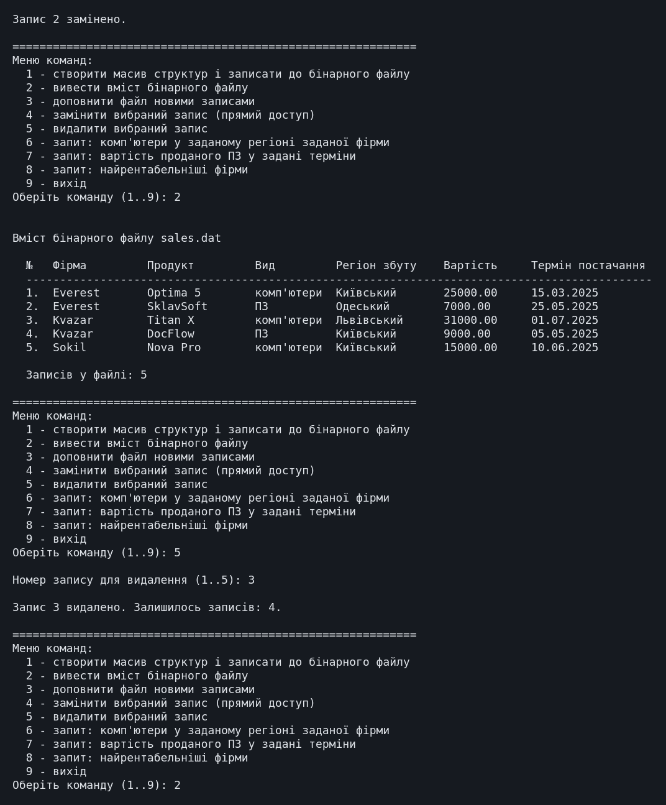
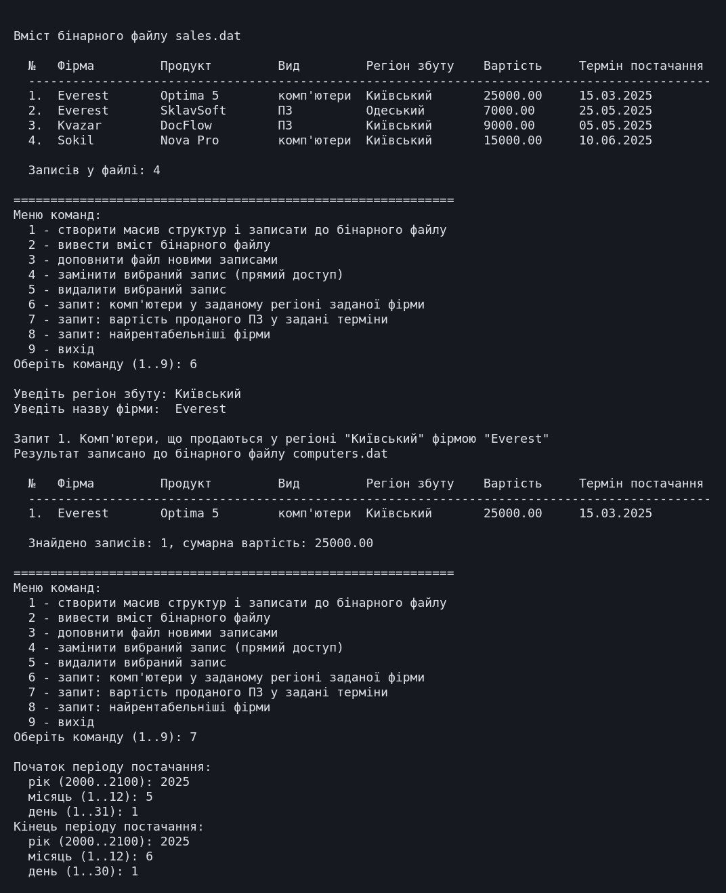
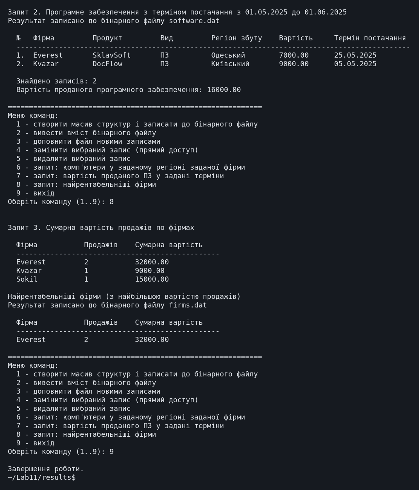
Повний протокол виконання (task2.txt) (повний протокол, 415 рядків)
7. Аналіз достовірності результатів
Достовірність результатів перевірено ручною перевіркою ознаки повного квадрата, обчисленням на калькуляторі та покроковим контролем стану бінарного файлу. Для кожної контрольної величини поруч із розрахунком наведено результат програми.
Перевірка розрахунків на калькуляторі
Нижче наведено екранні копії обчислень у калькуляторі WolframAlpha; поруч із кожною - результат програми.
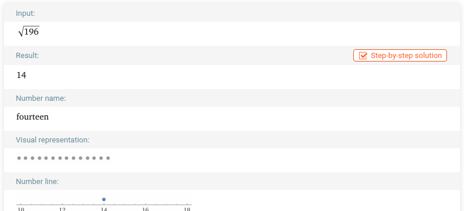
Калькулятор: 14; програма: 196 = 14² у переліку відібраних. Значення збігаються.
Завдання 1. Контрольний набір чисел
До файлу записано 12 чисел, підібраних так, щоб охопити всі випадки: 1, 4, 7, 9, 15, 16, 25, 30, 36, -4, 0, 100.
| Число | Чи є квадратом (ручна перевірка) | Результат програми |
|---|---|---|
| 1, 4, 9, 16, 25, 36, 100 | так: 1², 2², 3², 4², 5², 6², 10² | усі відібрані, корені виведено правильно |
| 0 | так: 0 = 0² - граничний випадок | відібрано, виведено 0 = 0² |
| 7, 15, 30 | ні: між сусідніми квадратами | не відібрані |
| -4 | ні: від'ємні числа квадратами не є | не відібрано |
Знайдено 8 квадратів з 12 чисел, як і за ручним підрахунком; окремо перевірено нуль і від'ємне число.
Додатково перевірено 40 псевдовипадкових чисел у діапазоні [0; 200]: кожне відібране число присутнє у вхідному файлі й має цілий корінь, який виводить програма. Набір змінюється від запуску до запуску, тому кількість квадратів у протоколі може відрізнятися; очікувано близько 3, бо квадратів 15 зі 201 можливого значення.
Перевірено також звертання до неіснуючого файлу: програма виводить повідомлення "Файл "numbers.txt" не існує. Спочатку створіть його.", а не завершується аварійно.
Завдання 2. Перевірка операцій з бінарним файлом
Розмір однієї структури Sale становить 128 байтів, тому розмір файлу в
байтах, поділений на 128, дорівнює кількості записів.
| Крок | Дія | Очікуваний стан файлу | Результат програми |
|---|---|---|---|
| 1 | Створення 4 записів | 4 записи: Everest/Optima 5, Everest/OblikPro, Kvazar/Titan X, Kvazar/DocFlow | 4 записи, склад збігається |
| 2 | Доповнення 1 записом (Sokil/Nova Pro) | 5 записів, новий - у кінці, попередні без змін | 5 записів, Sokil п'ятим |
| 3 | Заміна запису 2 на Everest/SklavSoft/Одеський | 5 записів; змінився лише другий, решта недоторкані | "Запис 2 замінено."; решта записів без змін |
| 4 | Видалення запису 3 (Kvazar/Titan X) | 4 записи; наступні зсунулися вгору | 4 записи, Titan X відсутній |
Крок 3 перевіряє прямий доступ: після заміни другого запису решта записів лишилася
незмінною, тож seekp() позиціонує запис правильно, а режим
in | out не усікає файл.
Завдання 2. Перевірка запитів
Запити виконано над станом файлу після всіх чотирьох операцій: Everest/Optima 5 (комп'ютери, Київський, 25000, 15.03.2025), Everest/SklavSoft (ПЗ, Одеський, 7000, 25.05.2025), Kvazar/DocFlow (ПЗ, Київський, 9000, 05.05.2025), Sokil/Nova Pro (комп'ютери, Київський, 15000, 10.06.2025).
| Запит | Ручний розрахунок | Результат програми |
|---|---|---|
| 1. Комп'ютери, Київський регіон, фірма Everest | Підходить лише Optima 5 (Nova Pro - фірма Sokil, SklavSoft - ПЗ і Одеський регіон) -> 1 запис, 25000 | 1 запис, 25000,00 |
| 2. Вартість ПЗ з терміном 01.05.2025 - 01.06.2025 | SklavSoft (25.05) + DocFlow (05.05) = 7000 + 9000 = 16000 | 16000,00, 2 записи |
| 3. Найрентабельніші фірми | Everest: 25000 + 7000 = 32000; Kvazar: 9000; Sokil: 15000 -> найрентабельніша Everest | Everest, 32000,00, продажів: 2 |
Результати запитів записано до файлів computers.dat, software.dat і firms.dat. Їх розміри відповідають кількості знайденого: computers.dat - 128 байтів (1 запис Sale), software.dat - 256 байтів (2 записи Sale), firms.dat - 48 байтів (1 запис FirmTotal).
Окремо перевірено запити до неіснуючого файлу - виводиться повідомлення, аварійного завершення немає.
8. Висновки
-
Опрацьовано обидва інструментарії роботи з файлами: функції
stdio.hнад покажчиком наFILE(завдання 1) і класи потоківfstream,ifstream,ofstream(завдання 2). - Реалізовано відбір квадратів цілих чисел з текстового файлу до нового файлу з перевіркою в цілих числах.
-
Реалізовано доповнення, заміну прямим доступом (
seekp) і видалення перезаписом записів бінарного файлу. - Запити читають дані з файлу, а їх результати записуються до нових бінарних файлів і виводяться з них на екран.
- Обидва завдання варіанта виконано в повному обсязі.